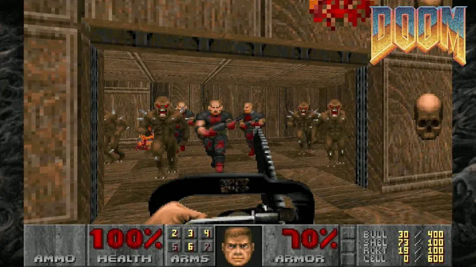
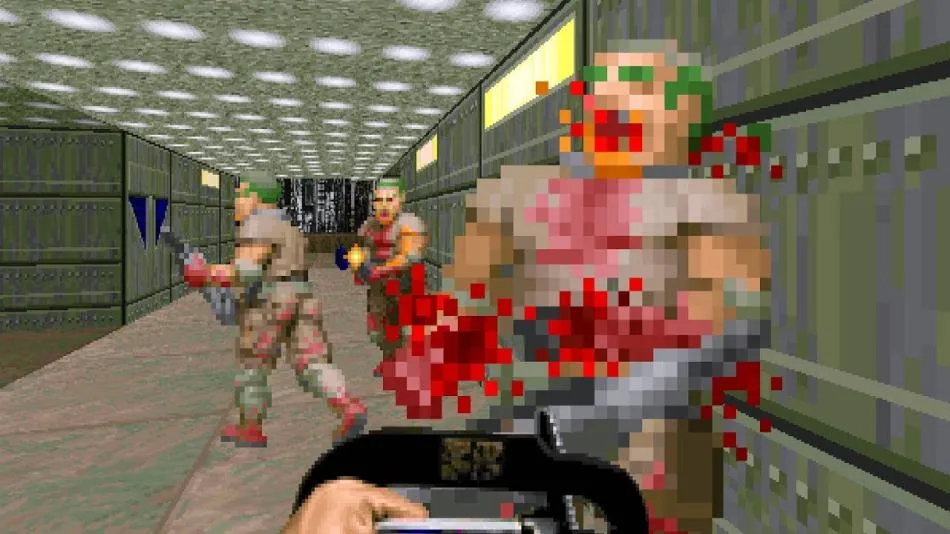
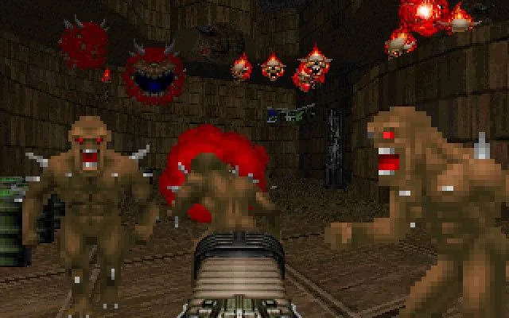
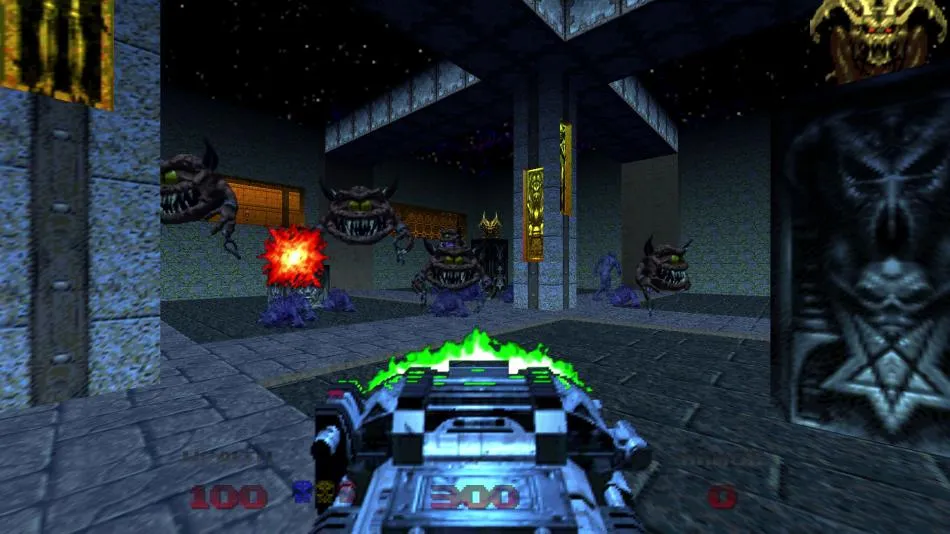
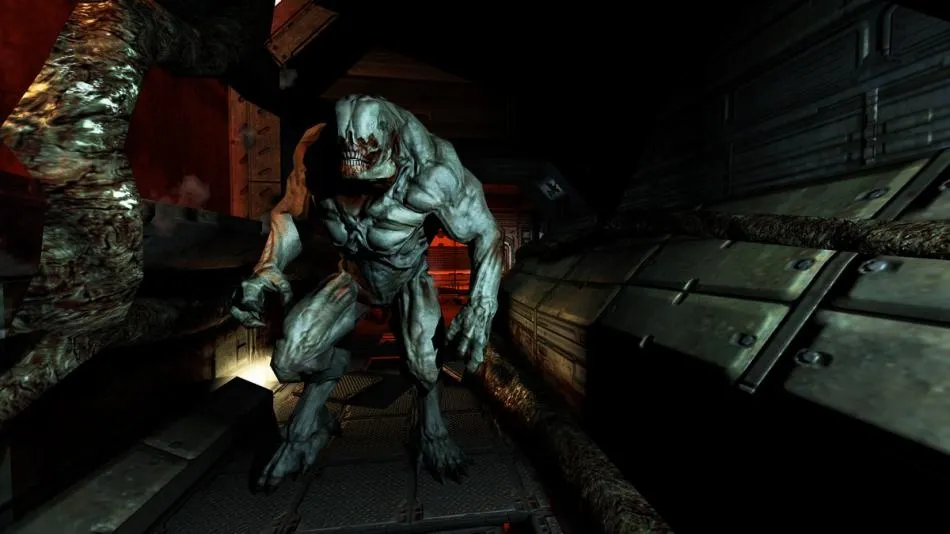
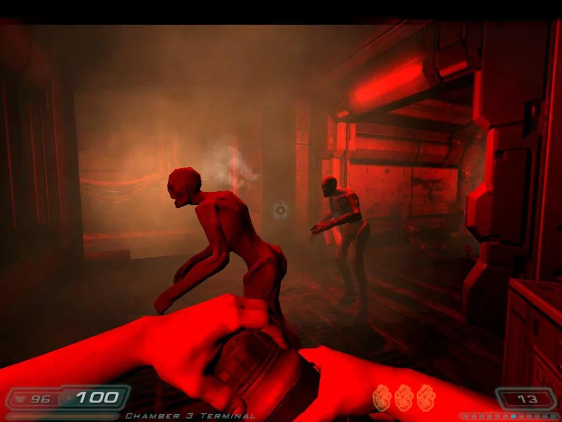
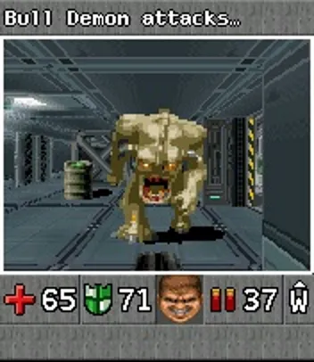
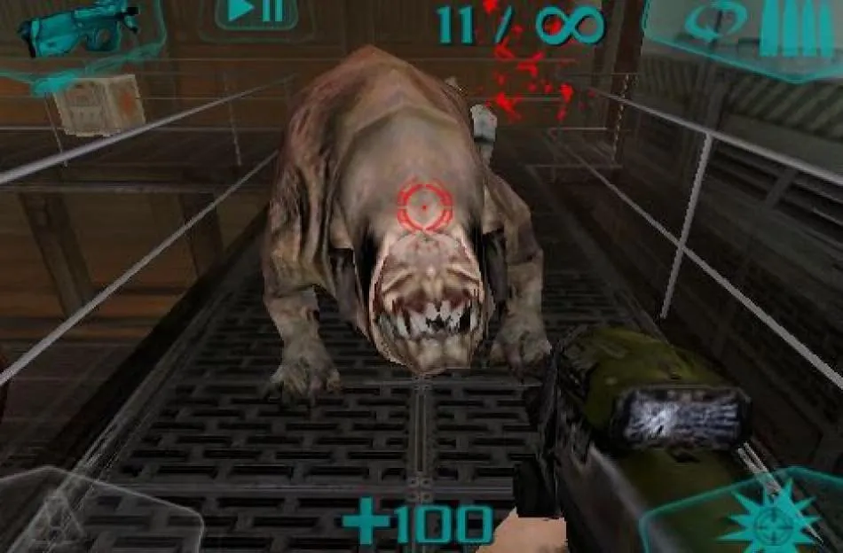
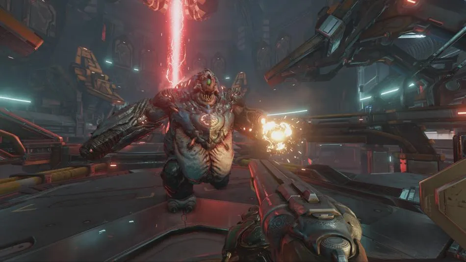
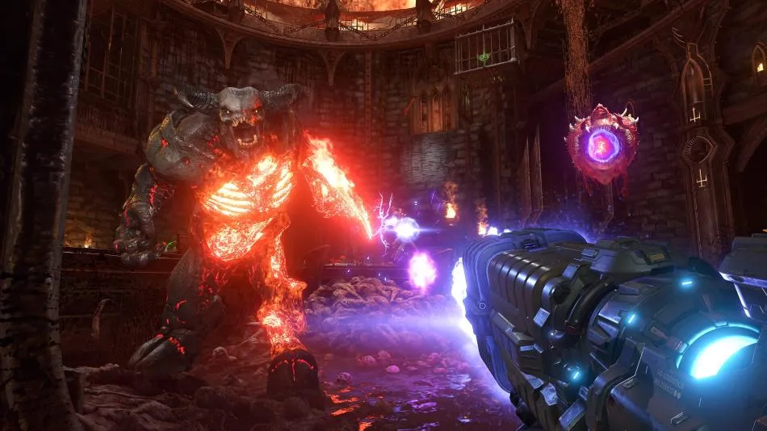

TODOS LOS JUEGOS DE DOOM
Seguramente, la saga Doom ya esté entre las más icónicas de la historia de los videojuegos. La serie de videojuegos llevada a la vida por Tom Hall, John Romero, John Carmack y Adrian Carmack ha gozado de un éxito y de una popularidad que sigue manteniendo hoy en día; a la vista está que la saga continúa desarrollando juegos y los primeros juegos de Doom se pueden jugar en cualquier lado.
A pesar del éxito de la saga Doom, otros juegos de Romero como Daikatana no llegaron a recibir tanto éxito y popularidad, e incluso otros títulos del mismo género que Doom, como por ejemplo Quake, Unreal y Serious Sam, no consiguieron competir de tú a tú con lo que ofrece Doom. ¿Los conoces todos? Vamos a comprobarlo.
Doom (1993)
El juego que lo inició todo, uno de los pioneros en el género FPS -disparos en primera persona- y que hoy en día se sigue jugando ya que está disponible en absolutamente toda plataforma que se pueda jugar hoy en día; incluso en los cajeros automáticos.
Doom II: Hell on Earth (1994)
Jugabilidad brutal y frenética, fue un poco más allá del original y lo puedes encontrar hoy simplemente como Doom II. Es probable que fuera lo más cercano a la fórmula original que haya estado nunca la saga, quizás es por eso que, más que una secuela, se podría considerar como una expansión del Doom original.
Final Doom (1996)
Lanzado en 1996, Final Doom trasladó enemigos, armas y objetos desde Doom II, pero puso como protagonismo a 32 nuevos niveles en una compilación, TNT: Evilution y The Plutonia Experiment, los cuales incluyen sistemas completos de nuevos niveles; 2 de estos son secretos.
Doom 64 (1997)
N64 tuvo excelentes shooters como Turok II, Perfect Dark y Goldeney, además de este Doom 64; más que una secuela, estaba basado en el port de PlayStation. Publicado por Midway, era una versión modificada de Doom Engine con nuevos gráficos y mejoras visuales que hoy se puede jugar en PC y PS4.
Doom 3 (2004)
Doom 3 optó por un ambiente de ciencia ficción, a la vez que propuso una sensación más desacelerada en un ambiente más atmosférico. Lanzado 10 años después del segundo juego, la industria había cambiado ya mucho, a la vez que el género FPS; hoy en día sigue dividiendo a los fans de Doom.
Doom 3 Resurrection of Evil (2005)
Al actuar tanto coomo secuela y expansión de Doom 3, Resurrection of Evil fue lanzado en 2005 para Windows, Linux y la primera Xbox. Desarrollado por Nerve Software en colaboración con id Software, el juego presentaba 12 nuevos niveles con nuevos enemigos y armas.
Doom RPG (2005)
Transformar Doom en RPG clásico por turnos similar a Eye of the Beholder no solo fue un éxito, sino que era muy bueno. Desarrollado por Fountainhead Software en asociación con id Software y lanzado junto a la película de 2005, el juego se lanzó para dispositivos con Symbian y Java; nunca ha llegado a ver un port para iOS o Android.
Doom Resurrection (2009)
Doom Resurrection está muy olvidado, exclusivo de iOS y muy similar al estilo de Doom 3. Situado en una estación espacial con una atmósfera de terror, fue criticado para bien, pero hoy en día está perdido en el tiempo; solo funciona en versiones antiguas de iOS y nunca recibió un port.
Doom (2016)
Este fue el proyecto en el que se convirtió Doom 4, y que al final resultó ser un reinicio de la saga. El juego se encuentra disponible para PC, Nintendo Ssitch, PS4 y Xbox One. Gráficamente es muy consistente e incluso funciona a 60fps, lo que dice ya mucho de otros juegos para diversas plataformas.
Doom Eternal (2020)
Doom Eternal aspira a ser la secuela perfecta para Doom 2016 y el reinicio de la saga, pero habrá que decidirlo una vez que se ponga a la venta este próximo 20 de marzo. Recordad que este 20 hay cita doble, ya que también se pone a la venta Animal Crossing: New Horizons.